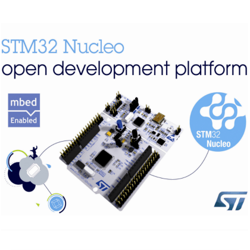

STM32 Nucleo-64™ Microcontroller Board
Morpho Expansion Board
This project is a template for Morpho expansion boards for STM's family of
STM32 Nucleo-64
development boards.
This project includes a PCB edge defined as the same size as the Nucleo-64 mainboard
with Morpho connectors placed correctly to align the two boards. The board is cut out
to allow access to the reset and user switches.

(c)2017 Rob Riggs